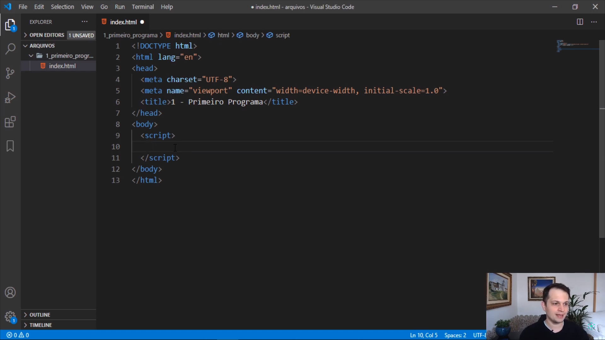

Primeiros passos no JavaScript
Nem precisava estar me dedicando tanto a essa parte do HTML, mas acho que vai ser um bom exercício de pratica para tudo que vim aprendendo de HTML5 e CSS. De qualquer forma, o que importa mesmo e o que de fato viemos aqui fazer é estudar JavaScript.
[DISCLAIMER]
Acho importante de falar, é que estou me baseando aqui nos videos sobre JavaScript que tem no canal do Matheus Battisti (Matheus Battisti - Hora de Codar). Mas não duvido nada de que ao longo do processo eu inclua outras coisas que eu tiver encontrado pelas "interwebs" da vida.
Print de um dos videos:
O primeiro comando que ele ensinou foi console.log("Seu texto"). Na parte onde você deve inserir o seu texto ele escreveu o classico "Hello World!". Já eu, escrevi "Essa mensagem foi feita com JavaScript", apenas para fugir um pouco do "Hello World!".
Após isso ele roda o comando no browser dele para mostrar o que acontece. Nessa hora ele vai em inspecionar e mostra a aba "console" na parte inferior do DevTools. No print a seguir você pode conferir o resultado.
Print do DevTools:
Como você pode ver, esse comando serviu básicamente para exibir uma mensagem nessa aba. Porém não é só para isso que esse comando serve. Na verdade esse comando é usado para depurar o código, mas como também tem essa função de exibir uma mensagem ele acaba sendo um bom comando para se usar de exemplo no inicio dos estudos.
Há alguns outros comandos com o "console" que da para gente brincar nesse inicio. Confira comigo alguns desses comandos.
Exemplo de console.info("");
Exemplo de console.error("");
Exemplo de console.warn("");
Por enquanto é apenas isso. Eu nem comecei a estudar JavaScriptde verdade ainda, mas estou muito animado para ver o que vai vir ai pela frente. o Matheus Battisti tem um playlist com varios videos, imagino que ele faça videos curtos ensinando de pouco em pouco e por isso são varios videos.
De qualquer maneira também já achei uma página do site da Microsoft que fala um pouco sobre os comandos que usam o "console", e com toda certeza eu irei ler o que eles estão falando lá. Caso você queira ver os videos do Matheus ou ler o artigo que tem no site da Microsoft é só clicar nos botões que estão logo a baixo.
Matheus Battisti - Hora de Codar Microsoft Learnつづく